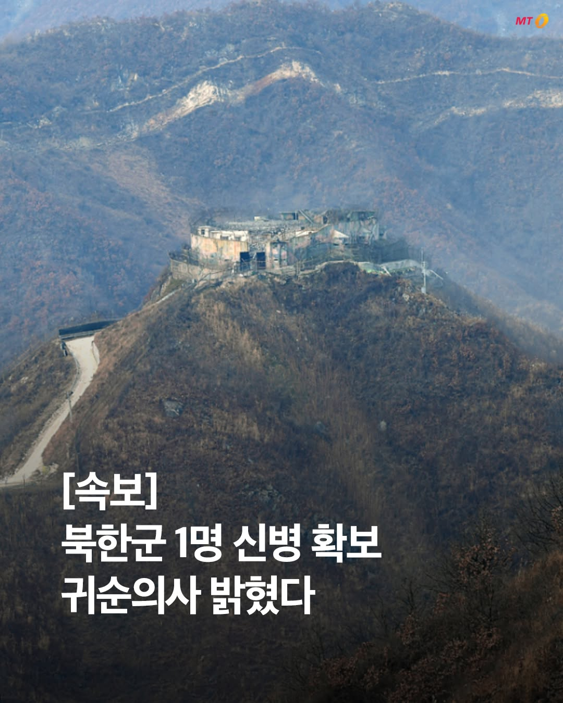
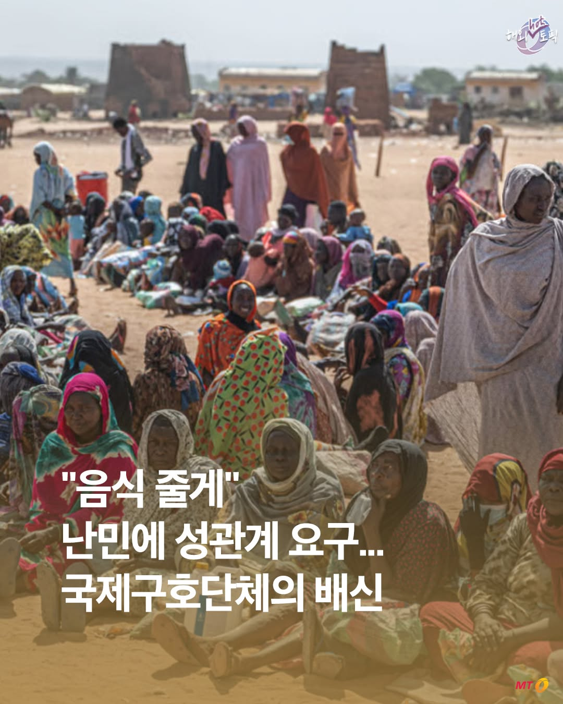
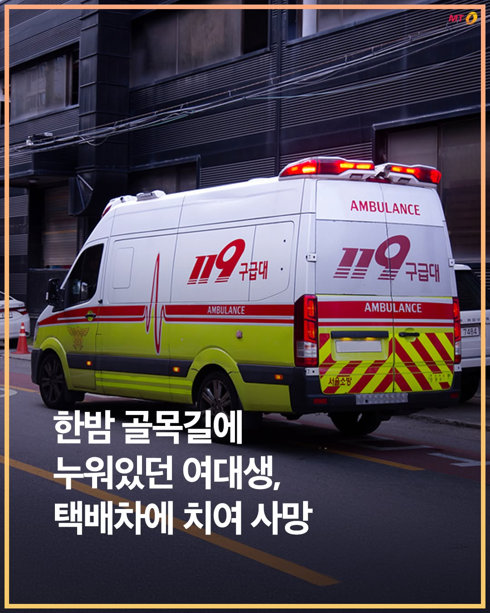
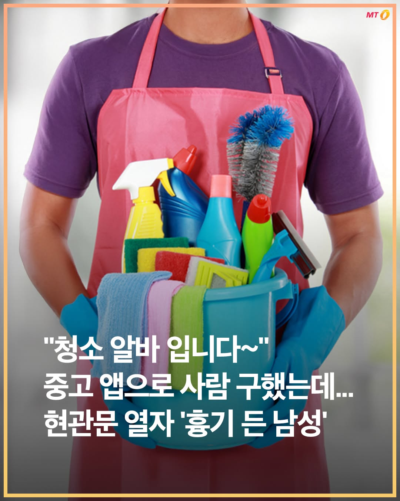

📑 2장
제주지역 한 농협 하나로마트에서 20대 노동자가 지게차에 깔려 사망한 사고와 관련해 "정규직 전환 압박이 있었다"라는 유족들의 주장이 나왔다.
23일 온라인 커뮤니티 '보배드림'에는 '2주 뒤 아빠가 될 26살 제 사촌 언니 남편의 억울한 죽음을 알려주세요'라는 제목의 글이 올라왔다.
글을 쓴 A씨는 최근 지게차 사고로 사망한 20대 남성의 아내와 사촌지간이라고 자신을 소개하며 "사촌 언니의 남편이 너무나 억울하게 돌아가셨
Instagram에서 열기

합동참모본부가 지난 23일 밤 중부전선에서 북한군 1명의 신병을 확보했다고 24일 밝혔다.
합참은 "관련 세부사항에 대해서는 관계기관에서 조사 중"이라고 설명했다.
해당 군인의 귀순 의사를 밝힌 것으로 알려졌다. 군과 관계기관은 심층 조사를 통해 북한군의 귀순 동기와 신원, 실제 귀순 의사 유무 등을 파악하고 있다.
이재명 정부 출범 후 귀순 사례는 이번이 네 번째다. 군인 귀순으로는 두 번째다. 지난해 10월 북한군 1
Instagram에서 열기
📑 2장
고(故) 이채원양이 명예소방관으로 위촉되며 못다 한 꿈을 이뤘다.
22일 전국공무원노조 광주소방지부에 따르면 전날 광주 광산구 광주시교육청시민협치진흥원에서 이채원양의 49재 추모식이 열렸다. 이양의 49재는 이날이지만 이양의 친구들이 참석할 수 있도록 주말로 하루 앞당겨 추모식을 진행했다.
이 자리에서 이양의 부모는 이양을 대신해 명예소방관 위촉장과 함께 이양의 이름 석 자가 적힌 소방대원 활동복을 받아들었다. 위촉장에는
Instagram에서 열기
지난해 10월 예비 신부였던 20대 여성 소방관이 스스로 목숨을 끊은 사건 관련 고인이 생전 호소한 직장 내 괴롭힘 의혹이 대부분 사실로 드러났다.
24일 뉴스1·뉴시스에 따르면 국무조정실 정부합동 공직복무점검단(점검단)은 지난 11일부터 2주간 소방청과 광주소방안전본부, 광산소방서를 대상으로 집중 점검한 결과를 이날 발표했다.
조사 결과 숨진 A소방교는 소속 부서 회식 참석을 강요받아 2024년 7월부터 15개월간 총 2
Instagram에서 열기

국제 의료구호단체 국경없는의사회(MSF) 일부 직원들이 수단 난민을 상대로 성 착취를 일삼은 사실이 드러나 충격을 주고 있다.
15일(현지 시간) 프랑스 일간 르몽드 등에 따르면 MSF는 이날 수단 여성 난민들이 제기한 59건의 성 착취 및 성폭행 사건과 관련해 혐의가 확인된 차드 지부 직원 18명을 해고하고 향후 MSF 재취업을 금지했다고 밝혔다.
피해자들은 수단 내전을 피해 접경 지역인 차드 동부로 피난 온 여성들로 이
Instagram에서 열기
동대문엽기떡볶이(이하 엽떡)가 내년 7월부터 전 제품 가격을 약 7% 인상한다고 22일 밝혔다. 이에 따라 대표메뉴인 기본 엽기떡볶이 가격이 기존 1만4000원에서 약 1만5000원이 될 전망이다. 엽떡이 가격을 인상하는 것은 17년 만이다.
22일 엽떡을 운영하는 핫시즈너는 자사 홈페이지 공지사항을 통해 "최근 몇 년 간 가파르게 상승한 식·원자재 가격으로 부득이하게 소비자분들에게 죄송한 말씀을 드리게 됐다"며 이같이 밝혔
Instagram에서 열기

한밤중 주택가 골목길에 누워있던 여대생이 택배 차량에 치여 숨지는 사고가 발생했다.
22일 뉴스1·뉴시스와 경기 남양주남부경찰서에 따르면 전날(21일) 오후 11시30분쯤 남양주시 다산동 한 아파트 단지 인근 이면도로에서 50대 남성 A씨가 몰던 택배 차량이 도로에 누워있던 여대생 B씨를 치고 지나갔다.
이 사고로 복부 등을 크게 다친 B씨는 119 구급대에 의해 인근 병원으로 옮겨졌지만 끝내 숨졌다.
A씨는 당시 주변이
Instagram에서 열기
📑 2장
대한민국 축구대표팀이 남아프리카공화국(이하 남아공)에 0대 1로 패한 가운데 수비수 설영우가 욕설과 인신공격성 악성 댓글에 대해 강경 대응을 예고했다.
25일(한국시간) 북중미 월드컵 조별리그 3차전에서 한국 대표팀이 남아공에 0대 1로 패한 직후 설영우의 에이전트가 운영하는 공식 SNS(소셜미디어) 계정에는 "최근 일부 댓글 및 메시지 중에는 욕설, 인신공격, 명예훼손, 허위사실 유포 등 건전한 의견 표현의 범위를 명백히
Instagram에서 열기

중고거래 플랫폼에서 청소 아르바이트생을 구한 여성이 범죄 표적이 되는 사건이 발생했다.
25일 경기 남양주남부경찰서는 여성을 흉기로 위협한 혐의를 받는 30대 남성 A씨를 붙잡아 조사 중이라고 밝혔다.
A씨는 전날 남양주시 한 아파트에서 30대 여성 B씨를 흉기로 위협한 혐의를 받는다.
B씨는 범행 장소인 아파트 거주자로, 중고거래 플랫폼을 통해 A씨를 청소 아르바이트생으로 구했다.
피해자는 별다른 의심 없이 A씨에게
Instagram에서 열기
📑 10장
26年 6月 22日 • 안녕하세요- 미도리입니다. 새롭게 한 주가 시작했습니다. 가벼운 마음으로 퇴근하고 앉아 글을 쓰고 있어요. 월요일 잘 맞이하셨을까요? ♪♪♪
유월은 말이지요. 왜인지 분주해서 이리 저리 움직이다 보니 한 주가 금~방 지나갔더랍니다. 다음주가 7월인 게 믿기지 않을 정도로요! 후후 .. 소식을 전하지 못 했던 시간동안 여러 물건을 만들기도, 소개하기도 했습니다. 큰 마음으로 우리 공간을 찾아주시는 분들
Instagram에서 열기
📑 9장
26年 6月 23日 • 안녕하세요— 미도리입니다 .. 우리 공간 12시부터 19시까지 시원하게 열려 있습니다. 어제 내린 비 덕분인지, 온 세상이 맑고 깨끗해요. 오시는 길이 즐거우실 수 있도록~ 오늘은 일찍 글을 올려 보냅니다. 후후 .. ♪
생각이 많은 편이에요. 짧지만 많은 생각들이 하루에도 몇 십 번씩 머리를 스쳐 지나가는지 모르겠어요. 이것도 저것도 해보고 싶다는 생각도 하고요. 얼른 해야 하는데! 하며 마음을 재촉
Instagram에서 열기
📑 10장
26年 5月 27日 • 안녕하세요! 미도리작업실 미도리입니다. 드디어— 바인더 3종과 카드포켓 3종을 넷숍에서 만나보실 수 있습니다! 기다려 주셔서 고맙습니다. ( ⌒ ͜ ⌒ ) ♪
바인더 세팅을 모두 마치고 사진 찍고 싶었는데 말이지요 .. 얼른 보내드리고 싶은 마음에 !!!!!!!!!! 이대로 올려 두었습니다. 이름을 어떻게 지어주면 좋을까- 하다가, 역시나 자유롭게 꾸밀 수 있는 제품이니 나만의 방식대로! 를 붙여야겠다
Instagram에서 열기
 4/6
4/626年 5月 29日 • 안녕하세요– 미도리작업실 미도리입니다. 우리 공간 12시부터 19시까지 열려 있고요. 기다리고 기다리고 기다려주신 아오리 네코 단우산이 넷숍과 오프라인에 입고 되었습니다 .. • 🤸🏻♂️ ~ ♪ (품절되었던 수모와 new 수모도 진열해두었어요)
겉과 속이 다르면 안 되는 걸까? 아오리 네코는 이 작은 의문에서 시작되었어요. 아오리 사과의 풋풋하고 상큼한 겉모습과는 다르게— 누구도 쉽게 짐작하지 못할
Instagram에서 열기
 1/6
1/6 2/6
2/626年 5月 30日 • 안녕하세요— 미도리작업실 미도리입니다. 토요일에도 열심히 발송 업무를 마치고 ~ 손님 분들을 만나 뵙고 ~ 퇴근했습니다 ~ ♪♪♪ 홀가분한 저녁이에요!
오월 잘 보내셨나요? 저는 오래 준비했던 것들을 꺼내보였던 달이었는데요. 만든 것을 세상에 보여주는 일— 역시 재밌구나! 느꼈던 초여름이었습니다. 조금 더 열심히 해보고 싶은 것들도 생기고~ 하루 하루 건강하게 보내고 싶은 마음도 커진 5월이었습니다!
Instagram에서 열기
📑 5장
26年 6月 24日 • 안녕하세요– 미도리작업실 미도리입니다. 우리 공간 같은 시간에 열려 있었고요. 행복하게~ 즐겁게~ 오늘 영업을 마쳤습니다. 귀한 걸음 이 곳으로 향해주셔서 고맙습니다~ 사랑합니다~ ♪♪♪
오늘은 어떤 하루 보내셨나요? 저는 말이지요~ 아오리 네코 양우산 아래서 쨍쨍 내리쬐는 햇빛을 즐겼고요~ 출근해서는 보낼 물건들에 바코드를 붙이고, 오시는 손님들을 맞이하고, 열심히 택배를 포장하고, 놓치거나 실수한
Instagram에서 열기
▶ 263,970회
"하지만 예뻤죠?" 드리미 선풍기 MF10 리뷰 / 오목교 전자상가
미감은 대박인데, 마감은 쪽박인 선풍기가 하나 있습니다.
드리미 MF10은 바닥 주변 공기를 흡입해
위로 끌어올린 뒤 좁은 틈새로 뿜어내는
독특한 작동 방식의 날개 없는 선풍기입니다.
유독 바람이 멀리 뻗어나가기 때문에
서큘레이터처럼 공기 순환에 탁월한데요.
특히 바닥에 가라앉은 에어컨 냉기를 방 전체로 퍼뜨려
구역별 냉방을 만들 때 효과적입니다.
하지
Instagram에서 열기
내일 열리는 월드컵 멕시코전, 승리할 수 있을까? ⚽🔥
32강 진출을 확정 지을 수 있는 운명의 멕시코전!
지난 체코전 승리로 우리 대표팀을 향한
국민들의 기대가 뜨거운데요.
멕시코와의 역대 맞대결 전적과
내일 있을 경기를 분석해 봤습니다.
1) 대한민국 vs 멕시코 역대 전적 📊
멕시코 상대 A매치 통산전적 4승 3무 8패
2006년 LA 친선경기 1-0 승리가 마지막
2) 1차전 이후 멕시코에 대한 평가 🎤
남아
Instagram에서 열기
출구조사와 전혀 달랐던 실제 서울시장 표심 🗳️
정원오 후보의 당선을 예측했던 출구조사와 달리,
오세훈 후보가 서울시장의 자리에 올랐습니다.
사상 첫 5선 서울시장이 된 오세훈 당선인
반전을 거듭한 서울 시민의 표심은 어떻게 갈렸을까요?
1) 뚜렷했던 성별·연령 데이터 📊
20대 이하 남성층의 압도적인 오세훈 후보 지지율
4050세대에서는 정원오 후보에 대한 높은 지지율을 보인 것도 특징
2) ‘투표용지 부족 사태’
Instagram에서 열기
☕ ‘탱크데이’ 논란으로 100억 넘게 잃었다는 스벅 근황 ㄷㄷ
'5·18 탱크데이' 마케팅 논란 이후
많은 소비자들이 ‘탈벅’을 선언했는데요.
불매운동 직격탄을 맞은 스타벅스는
지난 1일 선불 카드 잔액 환불을 허용하고
서머 프로모션, e-프리퀀시도 줄줄이 중단하는 등
금이 간 이미지를 회복하기 위해 노력하는 중이죠.
📌 탱크데이 논란은 스타벅스에 얼마나 큰 타격을 줬을까?
1️⃣ 논란 직후 매출 급락
논란 발생 후
Instagram에서 열기
▶ 25,839회
검열?? 커뮤니티 이미지 사전 필터링? 루리웹 운영자의 반응 / 오목교 전자상가
AI 이미지 필터링, 디지털 성범죄를 막는 방패일까요.
아니면 무엇이 왜 걸러지는지 아무도 알 수 없는 블랙박스일까요.
7월 1일부터 일정 규모 이상의 국내 커뮤니티와 SNS 사업자는,
이용자가 올린 이미지가 불법촬영물 등으로
등록된 자료와 일치하는지 대조하는 조치를 의무적으로 시행해야 합니다.
이미 등록된 불법 자료의 특징값,
이른
Instagram에서 열기
🖥️‘AI 사전 검열’ 때문에 비상이라는 커뮤니티 상황??
오는 7월 1일부터 국내 주요 온라인 커뮤니티와
SNS 플랫폼에 새로운 의무가 적용되는데요.
이용자가 이미지를 업로드하면 게시 전에
AI가 먼저 검사하는 시스템이 도입될 예정이라고 합니다.
그런데 이 법, 시행을 두고 커뮤니티에서 큰 이슈가 되고 있습니다.🤔
📌 현재 논란이 되는 세 가지 쟁점
1️⃣ 사전 검열이다?
일부 이용자들은 게시 전에
AI가 이미지를
Instagram에서 열기
▶ 139,583회
일단 그냥 타! 가 아니라 쉽게 정리해드림
벌써부터 AI로 인한 전력 위기를 실감하는 인류에게
구원투수로 꼽히는 기술이 있습니다.
전 세계가 사활을 걸고 있는 이것, 바로 양자 기술인데요.
자주 접하다 보니 익숙하게 느껴지지만,
막상 설명하자니 어렵게만 느껴지는 이 기술.
도대체 뭐가 그렇게 대단한 걸까요?
양자 기술의 정의부터,
우리가 올해 이 기술에 주목해야 하는 이유까지
스브스뉴스가 알아봤습니다.
Instagram에서 열기
▶ 52,328회
코스피 8000의 숨은 조력자? 해외에서 국위선양 중인 중소 IT 기업들 근황 / 스브스뉴스
코스피의 기록적인 상승세에 정신이 없었던 요즘,
폭발적인 AI 반도체 수요에 힘입어 우리나라 IT 산업은 수출 면에서도 역대급 기록을 이어가는 중인데요.
이 전례없는 수출 호황의 뒷편에 있는 의외의 주인공들이 있습니다.
글로벌 IT시장은 대기업만의 것인 줄 알았는데 요즘은 AI, IoT로 무장한 우리나라 중소 IT기업들도 전 세계에
Instagram에서 열기
🗳️ 초접전 서울시장 선거, 오세훈 당선인은 어떻게 이겼을까?
끝까지 승자를 가리기 어려웠던
이번 제40대 서울시장 선거.
개표 초중반까지는 정원오 후보가 앞섰지만
오늘 오전 7시,
오세훈 후보가 극적으로 역전에 성공하며
제40대 서울시장 자리를 차지했습니다.
오세훈 당선인이 무사히 취임하면
최초의 5선 서울시장이 탄생할 예정이죠.
📌 오세훈 당선인을 승리로 이끈 핵심 공약은?
1️⃣ 압도적 주택 공급 ‘신속통합기획
Instagram에서 열기
🇲🇽멕시코: 한국을 사랑할 수밖에..♥
지난 6월 11일 개막한
'2026 FIFA 북중미 월드컵'
대한민국 대표팀은 체코와의 첫 경기에서부터
승리를 거머쥐며 힘찬 출발을 알렸는데요.
그런데 한국 대표팀의 승리를
한국인보다 더 기뻐하는 이들이 있었으니...
…멕시코 사람들이요?!
📌멕시코가 한국을 지독히 사랑하게 된 이유
1️⃣ 때는 2018년 러시아 월드컵으로 거슬러 올라 감
독일, 멕시코, 스웨덴과 같은 조에 편
Instagram에서 열기
📑 12장
이거 만들다가 치킨 내돈내산 했습니다🍗
📍Brand : @chris.p__official @cjcheiljedang
📍Agency : @studiok110
Instagram에서 열기
📑 12장
월드컵은 못 봐도 마케팅은 봐야지⚽️⚽️
2026월드컵 마케팅 재밌는 것만 가져옴🗂️
📍Adidas
[Backyard legend]
📍Nike
[Rip the script]
📍Heineken
[Fan Volunteers]
📍Coors Light
[The Coooors Call]
📍Lay’s
[No Lay’s No Game]
📍Nike x Lego
[Nike Football Collection]
📍Mcdona
Instagram에서 열기
📑 13장
📢 광줍이의 NEW 시리즈 #브랜드줍줍
독보적인 커뮤니케이션으로 소비자를 넘어 씬을 빛내는 브랜드들을 소개할게요✨
첫 번째 브랜드는 산산기어 @sansan_gear
앞으로도 광줍이가 새로운 시선을 깨워줄 브랜드를 콕 집어 소개해 드릴게요!
Instagram에서 열기
📑 3장
It's not just the NL East they're leading...
With the US spending a total of $2.63 billion on OnlyFans last year, Atlanta played a major role per a new report from OnlyFans search engine OnlyGuider.
According to the analysis, which at
Instagram에서 열기
📑 5장
We'll see you at the movies.
If Lou Bega taught us anything, it’s that No. 5 has value. Proving that lesson yet again, the fifth installment of Pixar's 'Toy Story' franchise notched the strongest box office debut of 2026 over the weeken
Instagram에서 열기
📑 3장
Congrats, you finally bought a home...now good luck with the upkeep.
According to a new analysis conducted by the Wall Street Journal, the combined total of basic annual homeowner costs (maintenance, insurance, property taxes, emergency
Instagram에서 열기
📑 3장
The World Cup's most unexpected MVP? Ranch dressing.
As international soccer fans have flooded into North America for the 2026 FIFA World Cup, many are leaving with a newfound obsession: ranch. Social media has been packed with Europeans
Instagram에서 열기
📑 8장
Special de-livery!
President Trump officially unveiled his new Air Force One jet last Friday. The Boeing 747, which was gifted to him by the Qatari government, has a different look than the current presidential jet, replacing the baby bl
Instagram에서 열기
📑 10장
A typical bike has more bells and whistles than this super-cheap EV truck.
Slate Auto, a Jeff Bezos-backed startup, launched pre-orders for its spartan electric truck today with a price tag of $24,950, putting it among just eight new car
Instagram에서 열기
Housing is a real mom-and-pop operation, literally.
About 33% of adults aged 18 to 34 lived with their parents last year, according to a Realtor.com analysis of government data. That’s about in line with 2020, when that number was a reco
Instagram에서 열기
It's Mike's way or the highway.
After an 11-year run as America's top fast food chain, Chick-fil-A has been dethroned by Jersey Mike's atop the American Customer Satisfaction Index's (ACSI) quick-service restaurant rankings.
Marking
Instagram에서 열기
Europe's summer is turning into a survival test.
France is baking under a record-shattering heat dome that's proving deadly. Officials say at least 45 people have died during the heat wave, including 40 drowning victims, as residents flo
Instagram에서 열기
📑 5장
Call it a square burger squeeze.
Wendy’s loyalists were out in full force today, sending shares of the fast-food chain up more than 25% after retail traders on Reddit’s r/wallstreetbets forum decided the Baconator business needed a helping
Instagram에서 열기